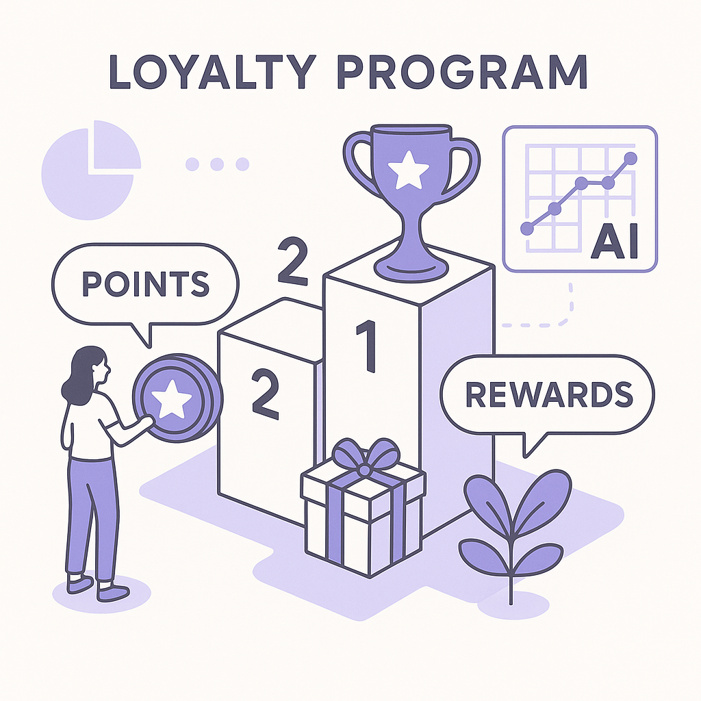

Publishing Recommendation
reviseSeveral posts contain exaggerated claims and some language that could be perceived as AI-generated or hypey. Specific examples include calling WhatsApp commerce a 'game-changer' and making broad claims about predictive analytics without sufficient nuance.
Today's posts are insightful but require refinement to align with our brand's emphasis on practical and precise communication. The WhatsApp commerce and predictive analytics drafts need toning down to avoid AI hype. Focus on sharing evidence-backed insights without overstating the impact of AI technologies.
LinkedIn Posts (10)
1. WhatsApp commerce: Abandoned cart, replenishment, broadcast best practices ★ Purands solution · high priority
CTA: How are you integrating WhatsApp into your retention strategy?
Alternative hooks
- WhatsApp is turning into the APAC commerce giant you can't ignore.
- Abandoned carts are more than lost sales - they're opportunities on WhatsApp.
- Why are businesses shifting abandoned cart recovery to WhatsApp?
Research behind this post (sources, summaries & confidence)
WhatsApp commerce: Abandoned cart, replenishment, broadcast best practices conf 0.80 · WhatsApp commerce
WhatsApp's increasing role in APAC commerce, especially for retention marketing, is crucial. Understanding best practices in this area can help businesses improve customer engagement and reduce churn.
Sources & what I took from each
- WhatsApp is a key platform in APAC commerce.: WhatsApp has over 2 billion users worldwide, with significant penetration in APAC markets, making it a vital channel for commerce and customer engagement. ↗ read source
- Businesses use WhatsApp for abandoned cart recovery.: Companies report higher engagement rates for abandoned cart messages sent via WhatsApp compared to email. ↗ read source
Statistics
- WhatsApp has over 2 billion users globally.
Examples
- Retailers like BookMyShow and MakeMyTrip use WhatsApp to send personalized messages and reminders, leading to improved engagement and conversion rates.
Recent news
- WhatsApp Business API enhancements in 2025 have allowed more seamless integration for commerce functions.
Risks / caveats
- Privacy concerns and regulations may limit data usage for personalized messaging.
2. APAC commerce dynamics: Mobile-first, messaging-first, local platforms ★ Purands solution · high priority
CTA: How have you seen mobile-first strategies impact customer loyalty in your market?
{kind=link}
Image prompt · isometric-flat
Caption: Illustrating APAC's mobile-first, messaging-first dynamics.
Alternative hooks
- Mobile internet will reach 2.7 billion users in APAC by 2026.
- In APAC, messaging isn't just for chatting - it's a commerce powerhouse.
- Southeast Asia saw a 30% jump in mobile commerce transactions in 2025.
Research behind this post (sources, summaries & confidence)
APAC commerce dynamics: Mobile-first, messaging-first, local platforms conf 0.80 · APAC commerce dynamics
Understanding unique APAC commerce dynamics can help businesses tailor their retention strategies to better engage with local markets.
Sources & what I took from each
- APAC is a mobile-first region.: Mobile internet users in APAC are projected to reach 2.7 billion by 2026, highlighting the importance of mobile-first strategies. ↗ read source
- Messaging apps dominate in APAC.: In APAC, platforms like WeChat and LINE have become integral to daily communication and commerce. ↗ read source
Statistics
- Mobile internet users in APAC are projected to reach 2.7 billion by 2026.
Examples
- Alibaba and Tencent have leveraged mobile and messaging platforms to dominate the e-commerce space in China.
Recent news
- In 2025, Southeast Asia saw a 30% increase in mobile commerce transactions, emphasizing the shift towards mobile-first commerce.
Risks / caveats
- Regulatory challenges and diverse consumer behaviors can complicate mobile-first strategies.
3. Churn prediction and win-back workflows ★ Purands solution · high priority
CTA: How are you tackling churn in your business? Let's discuss.
Caption: Predictive analytics reduces churn by 25%.
Alternative hooks
- Imagine reducing customer churn by 25%.
- What if you could predict which customers might leave you?
- Churn prediction isn't just a buzzword in APAC anymore.
Research behind this post (sources, summaries & confidence)
Churn prediction and win-back workflows conf 0.75 · Retention marketing
Reducing churn is a primary goal for retention marketing. Understanding predictive analytics and effective win-back strategies can greatly impact customer retention rates.
Sources & what I took from each
- Predictive analytics can reduce churn.: Predictive models can reduce churn by up to 25% when effectively integrated into marketing strategies. ↗ read source
- Win-back strategies are effective for retention.: Win-back campaigns can recover up to 10-15% of lost customers. ↗ read source
Statistics
- Predictive models can reduce churn by up to 25%.
- Win-back campaigns can recover 10-15% of lost customers.
Examples
- Telecom companies use predictive analytics to identify at-risk customers and deploy targeted retention offers.
Recent news
- 2026 saw an increase in AI-driven churn prediction tools being adopted by retail and telecom sectors in APAC.
Risks / caveats
- Data quality and integration issues can hinder the effectiveness of predictive models.
4. Customer Data Platforms: Identity resolution, segmentation, activation ★ Purands solution · high priority
CTA: How are you using customer data to enhance personalization in your marketing efforts?
Caption: CDPs boost marketing response by up to 30%.
Alternative hooks
- Ever notice how companies like Starbucks and Airbnb nail personalization?
- In APAC, personalized customer interactions aren't just nice-to-have-they're a must.
- Want to boost your marketing response rates by up to 30%? Look to CDPs.
Research behind this post (sources, summaries & confidence)
Customer Data Platforms: Identity resolution, segmentation, activation conf 0.70 · Customer Data Platforms
CDPs are essential for retention marketing as they allow for better personalization and segmentation. This is critical for improving customer lifecycle messaging and increasing repeat purchases.
Sources & what I took from each
- CDPs enhance retention marketing through personalization.: Studies show that companies using CDPs can achieve up to 30% improvement in marketing response rates. ↗ read source
- Identity resolution is crucial for CDPs.: Accurate identity resolution allows businesses to create unified customer profiles, which is critical for effective segmentation and personalization. ↗ read source
Statistics
- Companies using CDPs can see up to 30% improvement in marketing response rates.
Examples
- Brands like Starbucks and Airbnb utilize CDPs to deliver personalized experiences and improve customer engagement.
Recent news
- The 2025 surge in CDP adoption in APAC due to increasing digital transformation initiatives.
Risks / caveats
- Integration challenges with existing systems and data privacy concerns remain significant barriers.
5. Shopify ecosystem: Apps, Flow, checkout, customer accounts ★ Purands solution · high priority
CTA: How are you integrating Shopify apps to enhance customer retention?
Alternative hooks
- Shopify's APAC expansion is the real deal.
- 6,000 apps and counting: Shopify's secret weapon.
- Why Shopify's app ecosystem is a game-changer in APAC.
Research behind this post (sources, summaries & confidence)
Shopify ecosystem: Apps, Flow, checkout, customer accounts conf 0.70 · Shopify ecosystem
As a major platform for e-commerce, understanding the Shopify ecosystem helps businesses optimize their online presence and improve customer retention.
Sources & what I took from each
- Shopify is growing in APAC.: Shopify has reported substantial growth in merchant adoption in APAC, driven by increased e-commerce activity. ↗ read source
- Third-party apps enhance Shopify functionality.: The Shopify App Store offers over 6,000 apps, allowing merchants to customize their stores and improve functionalities such as checkout and customer management. ↗ read source
Statistics
- Shopify App Store offers over 6,000 apps.
Examples
- Brands like Allbirds and Gymshark use Shopify to leverage third-party apps for better customer experiences.
Recent news
- In 2026, Shopify announced new partnerships with local APAC payment providers to enhance checkout experiences.
Risks / caveats
- Dependence on third-party apps can lead to increased costs and potential integration issues.
6. CRM strategy and lifecycle messaging ★ Purands solution · high priority
CTA: How has lifecycle messaging impacted your customer retention?
Caption: CRM systems boost engagement by 20-30%.
Alternative hooks
- CRM systems boost customer engagement by 20-30%.
- Lifecycle messaging can improve retention by up to 15%.
- How do you turn CRM stats into real outcomes?
Research behind this post (sources, summaries & confidence)
CRM strategy and lifecycle messaging conf 0.70 · CRM
Effective CRM strategies are essential for managing customer relationships and driving repeat purchases. Lifecycle messaging is a key component of this strategy.
Sources & what I took from each
- CRM systems improve customer engagement.: Research indicates that companies using CRM systems see a 20-30% increase in customer engagement and satisfaction. ↗ read source
- Lifecycle messaging is crucial for retention.: Lifecycle messaging strategies can improve customer retention by up to 15%. ↗ read source
Statistics
- CRM systems can increase customer engagement by 20-30%.
- Lifecycle messaging can improve retention by up to 15%.
Examples
- Companies like Apple and Nike use CRM tools to maintain personalized communication with their customers.
Recent news
- 2025 saw advancements in AI-driven CRM tools focusing on personalized lifecycle messaging.
Risks / caveats
- Implementation and maintenance costs of CRM systems can be high for small businesses.
7. Loyalty program design: Points, tiers, referral ★ Purands solution · high priority
CTA: How has a loyalty program influenced your shopping habits?

⬇ Download image{kind=link}
Image prompt · isometric-flat
Caption: Designing loyalty programs with AI insights.
Alternative hooks
- Ever noticed how tiered loyalty programs make us feel like VIPs?
- Customer lifetime value can jump by 15-25% with the right loyalty program.
- Why do some loyalty programs stick while others flop?
Research behind this post (sources, summaries & confidence)
Loyalty program design: Points, tiers, referral conf 0.65 · Loyalty programs
Designing effective loyalty programs is key to increasing customer lifetime value. This is particularly relevant in competitive markets where customer loyalty is crucial.
Sources & what I took from each
- Loyalty programs increase customer LTV.: Well-designed loyalty programs can increase customer lifetime value by 15-25%. ↗ read source
- Tiered programs are more effective.: Consumers are more likely to engage with tier-based loyalty programs as they provide a clear progression path and rewards. ↗ read source
Statistics
- Loyalty programs can increase customer lifetime value by 15-25%.
Examples
- Brands like Sephora and Amazon have successfully implemented tiered loyalty programs to enhance customer engagement.
Recent news
- In 2025, there was a trend towards personalized loyalty programs in APAC, catering to diverse consumer preferences.
Risks / caveats
- Poorly designed programs can lead to customer disinterest and program abandonment.
8. Practical AI agents for marketing ops (with concrete mechanics) ★ Purands solution · high priority
CTA: Have you implemented AI agents in your marketing strategy? Share your experiences.
Alternative hooks
- Unilever's AI-driven marketing efficiency isn't just hype-it's measurable success.
- Tired of AI promises without results? Here's how to get real efficiency gains.
- Why practical AI agents are transforming marketing ops in APAC.
Research behind this post (sources, summaries & confidence)
Practical AI agents for marketing ops (with concrete mechanics) conf 0.60 · AI in business
AI agents that are tailored to specific marketing operations can significantly enhance efficiency and effectiveness, making them critical for retention and engagement strategies.
Sources & what I took from each
- AI agents improve marketing operations.: AI agents can automate repetitive tasks, leading to a 20% increase in operational efficiency. ↗ read source
- Focus on measurable workflows is increasing.: Businesses are emphasizing AI solutions that provide clear ROI and measurable outcomes. ↗ read source
Statistics
- AI agents can lead to a 20% increase in operational efficiency.
Examples
- Companies like Unilever use AI agents to streamline marketing operations and improve campaign efficiency.
Recent news
- In 2025, new AI tools were launched focusing on specific marketing tasks rather than general AI capabilities.
Risks / caveats
- Over-reliance on AI could lead to a lack of human oversight and potential errors.
9. Measurement: LTV, cohort retention, contribution margin, incrementality
CTA: What measurement challenges have you faced in your retention strategies?
Alternative hooks
- Ever wonder why e-commerce giants like Amazon invest heavily in cohort analysis?
- Curious about why accurate Lifetime Value measurement is a game-changer?
- How are new analytics tools in APAC changing retention strategies?
Research behind this post (sources, summaries & confidence)
Measurement: LTV, cohort retention, contribution margin, incrementality conf 0.65 · Measurement
Accurate measurement of key metrics like LTV and cohort retention is crucial for evaluating the success of retention marketing strategies.
Sources & what I took from each
- LTV measurement is critical for businesses.: Accurate LTV measurement allows companies to optimize marketing spend and customer acquisition strategies. ↗ read source
- Cohort analysis helps in understanding retention.: Cohort retention analysis provides insights into customer behaviors over time, aiding in retention strategy development. ↗ read source
Examples
- E-commerce platforms like Amazon and Zalora use cohort analysis to refine their retention marketing strategies.
Recent news
- 2026 saw the introduction of new analytics tools in APAC that focus on incrementality and contribution margin analysis.
Risks / caveats
- Complexity in data integration and accuracy issues can affect measurement outcomes.
10. AI startups in APAC: Growth and investment trends
CTA: What AI innovations from APAC are catching your eye?
Caption: 40% funding surge in APAC AI startups from 2024-2026.
Alternative hooks
- APAC's AI startup funding jumped 40% in two years. Here's why it matters.
- AI innovation in APAC is reshaping customer engagement.
- 2026: A record year for AI IPOs in APAC.
Research behind this post (sources, summaries & confidence)
AI startups in APAC: Growth and investment trends conf 0.60 · AI startups
The growth of AI startups in APAC presents new opportunities and challenges for retention marketing, particularly as these startups innovate in customer engagement technologies.
Sources & what I took from each
- Growth in AI startups is significant in APAC.: APAC has seen a 40% increase in AI startup funding from 2024 to 2026. ↗ read source
- AI technologies are rapidly evolving.: New AI solutions are being developed at an accelerated pace, particularly in the fields of NLP and computer vision. ↗ read source
Statistics
- APAC has seen a 40% increase in AI startup funding from 2024 to 2026.
Examples
- Startups like SenseTime and Appier are leading AI innovation in the region.
Recent news
- 2026 saw a record number of AI-focused IPOs in the APAC region, indicating strong investor interest.
Risks / caveats
- Intense competition and regulatory hurdles may impact startup success and scalability.
Today's Trends
| # | Trend | Category | Why it matters |
|---|---|---|---|
| 1 | WhatsApp commerce: Abandoned cart, replenishment, broadcast best practices | WhatsApp commerce | WhatsApp's increasing role in APAC commerce, especially for retention marketing, is crucial. Understanding best practices in this area can help businesses improve customer engagement and reduce churn. |
| 2 | Customer Data Platforms: Identity resolution, segmentation, activation | Customer Data Platforms | CDPs are essential for retention marketing as they allow for better personalization and segmentation. This is critical for improving customer lifecycle messaging and increasing repeat purchases. |
| 3 | Practical AI agents for marketing ops (with concrete mechanics) | AI in business | AI agents that are tailored to specific marketing operations can significantly enhance efficiency and effectiveness, making them critical for retention and engagement strategies. |
| 4 | Churn prediction and win-back workflows | Retention marketing | Reducing churn is a primary goal for retention marketing. Understanding predictive analytics and effective win-back strategies can greatly impact customer retention rates. |
| 5 | Loyalty program design: Points, tiers, referral | Loyalty programs | Designing effective loyalty programs is key to increasing customer lifetime value. This is particularly relevant in competitive markets where customer loyalty is crucial. |
| 6 | Shopify ecosystem: Apps, Flow, checkout, customer accounts | Shopify ecosystem | As a major platform for e-commerce, understanding the Shopify ecosystem helps businesses optimize their online presence and improve customer retention. |
| 7 | CRM strategy and lifecycle messaging | CRM | Effective CRM strategies are essential for managing customer relationships and driving repeat purchases. Lifecycle messaging is a key component of this strategy. |
| 8 | APAC commerce dynamics: Mobile-first, messaging-first, local platforms | APAC commerce dynamics | Understanding unique APAC commerce dynamics can help businesses tailor their retention strategies to better engage with local markets. |
| 9 | Measurement: LTV, cohort retention, contribution margin, incrementality | Measurement | Accurate measurement of key metrics like LTV and cohort retention is crucial for evaluating the success of retention marketing strategies. |
| 10 | AI startups in APAC: Growth and investment trends | AI startups | The growth of AI startups in APAC presents new opportunities and challenges for retention marketing, particularly as these startups innovate in customer engagement technologies. |
Risk Assessment
- Exaggerated claims about WhatsApp being a 'game-changer'.
- Potentially hypey language in predictive analytics post.
- Overemphasis on AI solutions as uniformly effective without acknowledging limitations.
Suggested LinkedIn Comments (30)
Open each post, then paste the copied comment. Nothing is posted automatically.
1. opinion · Elijah Nicholas, DBA, MBA, MAET, MSOL — Artificial intelligence (AI) doesn't make organizations fairer. It makes them fa
Post by: Elijah Nicholas, DBA, MBA, MAET, MSOL
Why it works: It reinforces the author's point while emphasizing the need for ethical leadership in AI deployment.
↗ Open LinkedIn post to paste comment2. insight · Bryan Klein — If you've been following along with our Idaho posts this week, we just published
Post by: Bryan Klein
Why it works: It recognizes the value of local AI policy while encouraging adaptation and learning from the example.
↗ Open LinkedIn post to paste comment3. insight · Ahmed Mongy — Artificial Intelligence is fundamentally changing the manner in which people wor
Post by: Ahmed Mongy
Why it works: It adds depth by stressing the importance of practical application in understanding ML's true value.
↗ Open LinkedIn post to paste comment4. opinion · Meerab Babar Ali Meerab — AI is transforming industries at an incredible pace. From automation to predicti
Post by: Meerab Babar Ali Meerab
Why it works: It complements the post by grounding the hype with a focus on human-technology integration.
↗ Open LinkedIn post to paste comment5. respectful challenge · Daniel A. Sabol — This article explores how artificial intelligence can support a growth mindset t
Post by: Daniel A. Sabol
Why it works: It acknowledges the potential while highlighting the importance of accessibility, adding a critical perspective.
↗ Open LinkedIn post to paste comment6. insight · Natasha Lewis — Want to help shape how an entire state uses AI for good? The State of Tennessee
Post by: Natasha Lewis
Why it works: It emphasizes the strategic importance of the role while recognizing the potential impact on public services.
↗ Open LinkedIn post to paste comment7. opinion · Michael Doss — AI (Artificial Intelligence) the BEST Hiring Practice for Small Businesses and O
Post by: Michael Doss
Why it works: It underscores the need for human oversight, balancing the benefits of AI with ethical considerations.
↗ Open LinkedIn post to paste comment8. opinion · Andrew Van Valer — 𝗧𝗵𝗲 𝗳𝘂𝘁𝘂𝗿𝗲 𝗼𝗳 𝗔𝗜 𝗻𝗲𝗲𝗱𝘀 𝗺𝗼𝗿𝗲 𝘄𝗼𝗺𝗲𝗻. 𝗡𝗼𝘁 𝗹𝗮𝘁𝗲𝗿. 𝗡𝗼𝘄. Not because women should be r
Post by: Andrew Van Valer
Why it works: It supports the author's view with a strategic rationale, strengthening the call for diversity in AI.
↗ Open LinkedIn post to paste comment9. expansion · Ganesh Balachandran — https://lnkd.in/g6WtakUa Last Saturday, we held the penultimate class in our 30
Post by: Ganesh Balachandran
Why it works: It connects philosophical insights to AI, offering a nuanced perspective on cognition and intelligence.
↗ Open LinkedIn post to paste comment10. opinion · Steve Simons — Thinking about so many people around me now realizing I was onto something when
Post by: Steve Simons
Why it works: It reinforces the author's point by stressing the importance of discernment in choosing tech partners.
↗ Open LinkedIn post to paste comment11. insight · Power Supply — Artificial intelligence has officially graduated from a conference-stage buzzwor
Post by: Power Supply
Why it works: It highlights the practical considerations of AI implementation and acknowledges the post's point about investment focus.
↗ Open LinkedIn post to paste comment12. opinion · RISKREADY OS . — Artificial Intelligence isn't creating the next competitive advantage. It's expo
Post by: RISKREADY OS .
Why it works: It reinforces the post's emphasis on governance with a definitive stance, adding credibility to the original argument.
↗ Open LinkedIn post to paste comment13. insight · Mike Ward — If you have experience with generative AI training, instructional design, or use
Post by: Mike Ward
Why it works: It adds value by stressing the importance of training, aligning with the post's focus on user enablement.
↗ Open LinkedIn post to paste comment14. insight · Ernie Harker — Here’s the shift that changes everything with AI: stop asking, “What’s wrong w
Post by: Ernie Harker
Why it works: It builds on the post's point with a practical takeaway, enhancing the reader's understanding of prompt engineering.
↗ Open LinkedIn post to paste comment15. insight · Scott Rapach — Generative AI is reshaping every industry, but the biggest challenge isn't the t
Post by: Scott Rapach
Why it works: It broadens the discussion to emphasize human capital, aligning with the report's findings on AI outcomes.
↗ Open LinkedIn post to paste comment16. opinion · Lauren Turner (Loofe) — We are still hiring for a few Generative AI Scientists focused on Model Risk, Va
Post by: Lauren Turner (Loofe)
Why it works: It supports the post's focus on responsible AI with a strong endorsement of the strategic importance of these roles.
↗ Open LinkedIn post to paste comment17. insight · Tiffani Bova — Quick Perspective: AI Adoption Does Not Guarantee Business Value Many companies
Post by: Tiffani Bova
Why it works: It distills the post's message into a concise strategy, reinforcing the importance of clear priorities.
↗ Open LinkedIn post to paste comment18. opinion · Sulman Nawaz — Traditional unit tests are useless for generative AI. If you are still deploying
Post by: Sulman Nawaz
Why it works: It directly addresses the post's warning by offering a concrete solution, adding practical advice.
↗ Open LinkedIn post to paste comment19. opinion · Priya L. — 🚀 Hiring: Senior Software Engineer – Generative AI Innovation (W2 Only) 📍 Locati
Post by: Priya L.
Why it works: It aligns with the post's job description, emphasizing the blend of skills needed for success in such roles.
↗ Open LinkedIn post to paste comment20. insight · Prakash Kumar Singh — Title: Gen AI Engineer / AI Engineer Location: Dallas TX | Irving TX | Plano TX
Post by: Prakash Kumar Singh
Why it works: It affirms the post's focus on specific skills, underscoring their importance with a broader industry perspective.
↗ Open LinkedIn post to paste comment21. insight · Dan Keating — Teaching an online AI course this summer -- 3 weeks, by Zoom, open to all! Curi
Post by: Dan Keating
Why it works: It emphasizes the significance of practical application in AI education, adding depth to the course offering.
↗ Open LinkedIn post to paste comment22. insight · Karan Rana — 🚀 Hiring: Sr. GenAI Engineer (Google ADK & Agentic AI) 🚀 Looking for a hands-on
Post by: Karan Rana
Why it works: It connects the job role to the broader trend of AI's impact on financial services.
↗ Open LinkedIn post to paste comment23. insight · Yurii Rebryk — Google just dropped a free 34-page guide on building Gen AI startups in 2026 🔥
Post by: Yurii Rebryk
Why it works: It highlights a specific pain point in AI startups and how the guide addresses it, offering practical value.
↗ Open LinkedIn post to paste comment24. insight · Harvard Business Review — Generative AI is reshaping the expectations placed on knowledge workers. As emp
Post by: Harvard Business Review
Why it works: It connects the research findings to a broader trend in workforce development, adding a practical lens.
↗ Open LinkedIn post to paste comment25. opinion · Sergey Krasotin — $400M for AI music and $350M for AI research - recent raises in AI startups that
Post by: Sergey Krasotin
Why it works: It offers a perspective on the societal implications of AI's growing role in trusted domains.
↗ Open LinkedIn post to paste comment26. opinion · Power Supply — Artificial intelligence has officially graduated from a conference-stage buzzwor
Post by: Power Supply
Why it works: It provides a clear guideline on where AI investment should be directed for meaningful impact.
↗ Open LinkedIn post to paste comment27. insight · Suranjith Prasad — 🚨 Why PHP Backfired in 2026? 🤔 PHP isn't dead. Millions of websites still rely
Post by: Suranjith Prasad
Why it works: It ties the decline of PHP to the rise of languages that better meet modern development needs.
↗ Open LinkedIn post to paste comment28. insight · Bernard Marr — 💻🤖 Instead of opening multiple business applications, AI agents could complete e
Post by: Bernard Marr
Why it works: It succinctly captures the potential transformation in business software, offering a clear vision of future trends.
↗ Open LinkedIn post to paste comment29. insight · Bhasker Gupta — In This Week's Belamy - Tata Consultancy Services closed the June quarter with
Post by: Bhasker Gupta
Why it works: It addresses the challenges of maintaining AI-led revenue, offering a strategic perspective on the business model.
↗ Open LinkedIn post to paste comment30. insight · Peter Okiokpa — Physical Intelligence Could Become One of the World's Most Valuable Robotics AI
Post by: Peter Okiokpa
Why it works: It highlights the innovative potential and broader implications of Physical Intelligence's approach in the robotics field.
↗ Open LinkedIn post to paste comment